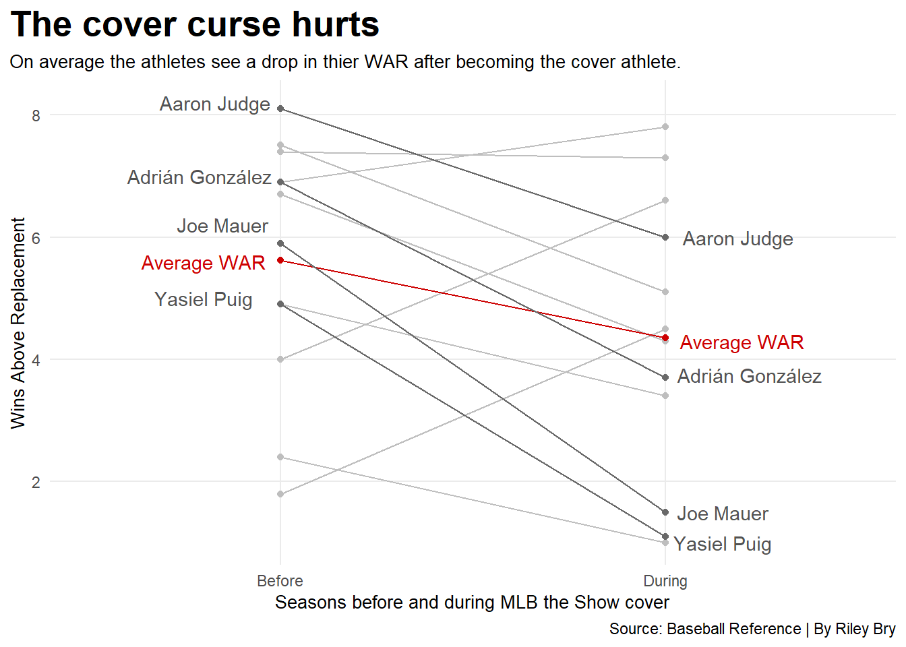

Code
library(tidyverse)
library(ggrepel)
library(patchwork)
library(ggalt)
library(ggtext)
library(ggplot2)
logs <- read_csv("mlb_hitter_value_2009_2024 (4).csv")
fixedlogs <- logs |> mutate(Player=gsub("#", "", Player)) |>
mutate(Player=gsub("\\*", "", Player))
coverathletes <- fixedlogs |>
filter(
Player == "Joe Mauer" |
Player == "Adrián González" |
Player == "Andrew McCutchen" |
Player == "Miguel Cabrera" |
Player == "Yasiel Puig" |
Player == "Josh Donaldson" |
Player == "Aaron Judge" |
Player == "Bryce Harper" |
Player == "Javier Báez" |
Player == "Fernando Tatis Jr." |
Player == "Shohei Ohtani" |
Player == "Jazz Chisholm Jr." |
Player == "Vladimir Guerrero Jr.") |>
select(season, Player, Age, Team, WAR) |>
filter(
season != 2020
)
Mauer <- coverathletes |>
filter(Player == "Joe Mauer") |>
filter(season > 2009) |>
filter(season < 2013)
EMauer <- Mauer |>
filter(season == 2011)
BMauer <- coverathletes |>
filter(Player == "Joe Mauer") |>
filter(season > 2009) |>
filter(season < 2016)
AMauer <- coverathletes |>
filter(Player == "Joe Mauer") |>
filter(season > 2009)
BPuig <- coverathletes |>
filter(Player == "Yasiel Puig") |>
filter(season > 2013) |>
filter(season < 2020)
APuig <- coverathletes |>
filter(Player == "Yasiel Puig") |>
filter(season > 2013)
Gonzalez <- coverathletes |>
filter(Player == "Adrián González") |>
filter(season > 2010) |>
filter(season < 2014)
AGonzalez <- coverathletes |>
filter(Player == "Adrián González") |>
filter(season > 2010)
McCutchen <- coverathletes |>
filter(Player == "Andrew McCutchen") |>
filter(season > 2011) |>
filter(season < 2015)
AMcCutchen <- coverathletes |>
filter(Player == "Andrew McCutchen") |>
filter(season > 2009)
Cabrera <- coverathletes |>
filter(Player == "Miguel Cabrera") |>
filter(season > 2012) |>
filter(season < 2016)
ACabrera <- coverathletes |>
filter(Player == "Miguel Cabrera") |>
filter(season > 2012)
Puig <- coverathletes |>
filter(Player == "Yasiel Puig") |>
filter(season > 2013) |>
filter(season < 2017)
EPuig <- Puig |>
filter(season == 2015)
Donaldson <- coverathletes |>
filter(Player == "Josh Donaldson") |>
filter(season > 2014) |>
filter(season < 2018)
ADonaldson <- coverathletes |>
filter(Player == "Josh Donaldson") |>
filter(season > 2014)
Judge <- coverathletes |>
filter(Player == "Aaron Judge") |>
filter(season > 2016) |>
filter(season < 2020)
AJudge <- coverathletes |>
filter(Player == "Aaron Judge") |>
filter(season > 2016)
Harper <- coverathletes |>
filter(Player == "Bryce Harper") |>
filter(season > 2017) |>
filter(season < 2022)
AHarper <- coverathletes |>
filter(Player == "Bryce Harper") |>
filter(season > 2017)
Baez <- coverathletes |>
filter(Player == "Javier Báez") |>
filter(season > 2018) |>
filter(season < 2023)
ABaez <- coverathletes |>
filter(Player == "Javier Báez") |>
filter(season > 2018)
Tatis <- coverathletes |>
filter(Player == "Fernando Tatis Jr.") |>
filter(season > 2018) |>
filter(season < 2023)
ATatis <- coverathletes |>
filter(Player == "Fernando Tatis Jr.") |>
filter(season > 2018)
Ohtani <- coverathletes |>
filter(Player == "Shohei Ohtani") |>
filter(season > 2020) |>
filter(season < 2024)
AOhtani <- coverathletes |>
filter(Player == "Shohei Ohtani") |>
filter(season > 2020)
Chisholm <- coverathletes |>
filter(Player == "Jazz Chisholm Jr.") |>
filter(season > 2021) |>
filter(season < 2026)
AChisholm <- coverathletes |>
filter(Player == "Jazz Chisholm Jr.") |>
filter(season > 2021)
Atotal <- rbind(AMauer, AGonzalez, AMcCutchen, ACabrera, APuig, ADonaldson, AJudge, AHarper, ABaez, ATatis, AOhtani, AChisholm )
WARAVG <- Atotal |>
summarise(
avgwar <- mean(WAR)
)
beforeAfter <- read_csv("newfixedcover.csv")
Mauer <- beforeAfter |>
filter(Player == "Joe Mauer")
Gonzalez <- beforeAfter |>
filter(Player == "Adrián González")
McCutchen <- beforeAfter |>
filter(Player == "Andrew McCutchen")
Cabrera <- beforeAfter |>
filter(Player == "Miguel Cabrera")
Puig <- beforeAfter |>
filter(Player == "Yasiel Puig")
Donaldson <- beforeAfter |>
filter(Player == "Josh Donaldson")
Judge <- beforeAfter |>
filter(Player == "Aaron Judge")
Harper <- beforeAfter |>
filter(Player == "Bryce Harper")
Baez <- beforeAfter |>
filter(Player == "Javier Báez")
Tatis <- beforeAfter |>
filter(Player == "Fernando Tatis Jr.")
Ohtani <- beforeAfter |>
filter(Player == "Shohei Ohtani")
Chisholm <- beforeAfter |>
filter(Player == "Jazz Chisholm Jr.")
barchart <- beforeAfter |>
filter(
season != "After"
)
CMauer <- Mauer |>
filter(
season != "After"
)
CPuig <- Puig |>
filter(
season != "After"
)
CGonzalez <- Gonzalez |>
filter(
season != "After"
)
CJudge <- Judge |>
filter(
season != "After"
)
totalWAR <- barchart |>
group_by(season) |>
summarise(
totWAR = sum(WAR)
)|>
mutate(
avgtotWAR = totWAR/12
)
DPuig <- read_csv("BPuigs.csv")
ggplot() +
geom_line(data=barchart, aes(x=season, y=WAR, group=Player), color="grey") +
geom_point(data=barchart, aes(x=season, y=WAR), color="grey") +
geom_line(data=totalWAR, aes(x=season, y=avgtotWAR, group=1), color="red3") +
geom_point(data=totalWAR, aes(x=season, y=avgtotWAR), color="red3") +
geom_line(data=CPuig, aes(x=season, y=WAR, group=Player), color="gray41") +
geom_point(data=CPuig, aes(x=season, y=WAR), color="gray41") +
geom_line(data=CMauer, aes(x=season, y=WAR, group=Player), color="gray41") +
geom_point(data=CMauer, aes(x=season, y=WAR), color="gray41") +
geom_line(data=CJudge, aes(x=season, y=WAR, group=Player), color="gray41") +
geom_point(data=CJudge, aes(x=season, y=WAR), color="gray41") +
geom_line(data=CGonzalez, aes(x=season, y=WAR, group=Player), color="gray41") +
geom_point(data=CGonzalez, aes(x=season, y=WAR), color="gray41") +
geom_text(aes(x=2.2, y=4.3, label="Average WAR"), color="red3") +
geom_text(aes(x=.8, y=5.6, label="Average WAR"), color="red3") +
geom_text(aes(x=2.15, y=1.5, label="Joe Mauer"), color="gray32") +
geom_text(aes(x=.85, y=6.2, label="Joe Mauer"), color="gray32") +
geom_text(aes(x=2.15, y=1, label="Yasiel Puig"), color="gray32") +
geom_text(aes(x=.8, y=5, label="Yasiel Puig"), color="gray32") +
geom_text(aes(x=2.22, y=3.75, label="Adrián González"), color="gray32") +
geom_text(aes(x=.79, y=7, label="Adrián González"), color="gray32") +
geom_text(aes(x=2.19, y=6, label="Aaron Judge"), color="gray32") +
geom_text(aes(x=.83, y=8.2, label="Aaron Judge"), color="gray32") +
labs(
x="Seasons before and during MLB the Show cover",
y= "Wins Above Replacement",
title="The cover curse hurts",
subtitle="On average the athletes see a drop in thier WAR after becoming the cover athlete.",
caption="Source: Baseball Reference | By Riley Bry"
) +
theme_minimal() +
theme(
plot.title = element_text(size = 20, face = "bold"),
axis.title = element_text(size = 10),
plot.subtitle = element_text(size=10),
panel.grid.minor = element_blank(),
plot.title.position = "plot"
) 